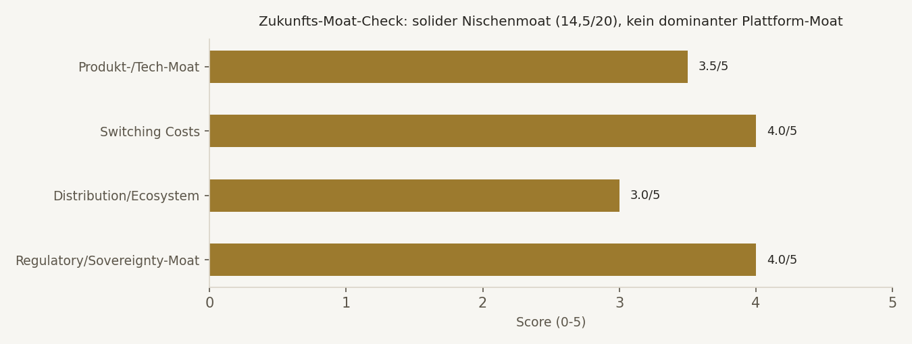
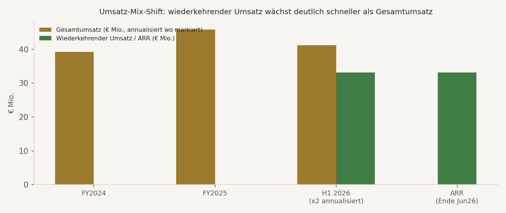
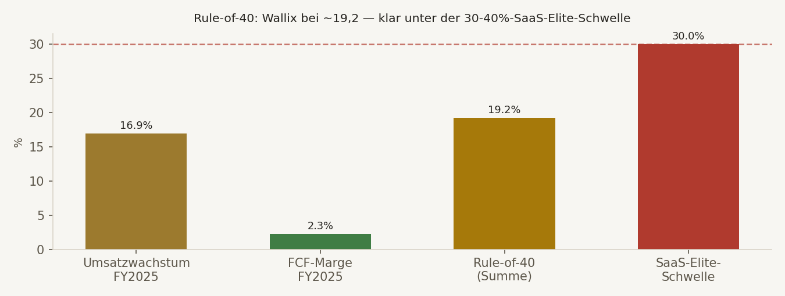

Das operative Geschäft. WALLIX ist ein französischer PAM-Anbieter (Privileged Access Management, "Bastion"-Suite) mit über 4.000 Kunden in 100+ Ländern. FY2025 markiert einen echten Wendepunkt: erstmals positiver Gesamtjahres-Free-Cashflow (€1,04 Mio., ggü. -€4,88 Mio. FY2024). H1 2026: wiederkehrender Umsatz +24,1% (jetzt 81% des Gesamtumsatzes), ARR €33,1 Mio.
Der Datencheck. Conan fand eine echte Umsatz-Divergenz zwischen Aggregator-Daten (€45,84 Mio. FY2025) und WALLIX' eigener IR-Zahl (€40,62 Mio.) — beide transparent nebeneinander verwendet statt einen zu unterschlagen. Aegis fand zusätzlich eine veraltete Aktienzahl bei mehreren Datenanbietern: nach einer NextStage-AM-Anleihewandlung im August 2026 stieg die Aktienzahl auf 7.099.569 — korrigierte Market Cap ~€159 Mio., nicht die von Aggregatoren gezeigten €146 Mio.
Der zentrale Vorbehalt. Rule-of-40 liegt nur bei ~19,2 (Umsatzwachstum 16,9% + FCF-Marge 2,3%) — klar unter der 30-40%-Schwelle, die einen echten SaaS-Elite-Compounder auszeichnet. Der Moat ist solide (Switching Costs, EU-Souveränitäts-Rückenwind durch NIS2/DORA), aber nicht dominant gegenüber CyberArk/Delinea/BeyondTrust.
Das Ergebnis. JJ und Conan konvergieren MODERAT auf einen vorsichtig-konstruktiven Scout-Buy — KAUFEN-KANDIDAT als Starter-Position, kein Core-Compounder. Zweiter Kandidat für die 2 offenen, weltweiten Talent-Slots (nach ORKA).
KAUFEN-KANDIDAT/Starter
Talent-Watchlist, gestaffeltes Sizing 0,5-2,5%
Konstruktiv
"Überzeugendes Quality-in-Formation" · Sizing vage ("mittelgroß")
B/73 — Starter-Buy
Explizit "kein Core-Compounder", gestaffeltes Sizing 0,5-2,5%
WALLIX zeigt einen echten, primärquellenbestätigten Wendepunkt: nach Jahren negativen Cashflows war 2025 erstmals FCF-positiv, getragen von einem strukturellen Shift zu wiederkehrendem Umsatz (81%, +24,1% Wachstum). Der EU-Souveränitäts-Rückenwind (NIS2/DORA/CRA-Regulierung, "European digital sovereignty champion"-Positionierung mit NextStage AM als verstärktem Aktionär) ist ein realer, strategisch relevanter Treiber. Aber: Rule-of-40 (~19,2) verfehlt die SaaS-Elite-Schwelle klar, NRR ist nicht offengelegt, und WALLIX bleibt gegenüber CyberArk/Delinea/BeyondTrust ein kleiner Nischenanbieter (Gartner-Rang 4). Das rechtfertigt eine Watchlist-Aufnahme mit vorsichtigem Starter-Sizing, keine große Core-Position.
Echter FCF-Wendepunkt 2025, 81% wiederkehrender Umsatz mit +24,1% Wachstum, gründergeführt mit Alignment, EU-Souveränitäts-Rückenwind, starke Cash-Position + €25-65 Mio. neue nicht-verwässernde Finanzierung.
Rule-of-40 nur ~19,2 (klar unter 30-40%-Schwelle), keine NRR-Offenlegung, kleiner Nischenanbieter ggü. drei US-Marktführern, Euronext-Growth-Microcap-Liquiditätsrisiko, nur 2 Analysten Coverage.
H1-2026-Zahlen 08.10.2026: Margenpfad, FCF-Fortsetzung, ARR/MRR-Tempo, ob NRR erstmals offengelegt wird. Verwendung der neuen Finanzierung (organisches Wachstum vs. M&A).
KAUFEN-KANDIDAT, Starter 0,5-1,0%. Aufstockung auf 1,5-2,0% nach Bestätigung 08.10.2026. Max. 2,5% ohne Rule-of-40-Beweis. Kauf-Zone €20-22.
| Kriterium | Schwelle | Ist-Wert | Status |
|---|---|---|---|
| Umsatz-CAGR (3J) | ≥30% | ~13,6% (2021-25), 14,2-16,9% aktuell | ❌ Verfehlt deutlich |
| Bruttomarge-Trend | steigend | ~98,6-99,2% (Aggregator) — strukturell hoch (Software) | ✅ Niveau erfüllt |
| Rule of 40 | ≥30% oder klar verbessernd | ~19,2 (Wachstum 16,9% + FCF-Marge 2,3%) | ❌ Zentraler K-Kritikpunkt |
| Burn-Multiple | <2,0x | Nicht anwendbar — FY2025 FCF-positiv (€1,04 Mio.) | ✅ Bestmöglich erfüllt |
| Cash-Runway | ≥18 Monate | Cash €12,1 Mio. + €25-65 Mio. neue Finanzierung — sehr stark | ✅ Deutlich erfüllt |
| Insider-/Gründer-Ownership | ≥10% | CEO ~9,4%, TDH ~6,4%, Mitgründer ~3,8% — zusammen >19% | 🟡 Grenzfall je nach Zählweise |
| TAM-Expansionsnachweis | Belegt | PAM-Markt CAGR 21-29% je Quelle, Wallix <1% globaler Anteil | ✅ Erfüllt |
| Net Revenue Retention | ≥110% | Nicht offengelegt — nur Gross-Retention >95% | ❌ Echte Datenlücke |
| Verwässerung (3J) | Beobachten | +4,6% durch NextStage-Wandlung, dafür €5 Mio. Schuldenabbau | 🟡 Beobachten, mit Gegenwert |
DNA-Urteil: K 3/5 (Rule-of-40 UND Umsatz-CAGR beide verfehlt), E 2/4 belegt, 1 Grenzfall, 1 echte Lücke. Kein Elite-SaaS-Profil, aber der FCF-Wendepunkt 2025 ist ein echter, verifizierter Fortschritt.

Moat-Gesamt: 14,5/20 — solider Nischenmoat, kein dominanter Plattform-Moat. Regulatory/Sovereignty-Moat (NIS2/DORA/CRA, EU-Souveränitäts-Agenda) und Switching Costs (Retention >95%) sind die stärksten Säulen; Distribution/Ecosystem ist die Schwachstelle ggü. den US-Marktführern.
Aggregator (StockAnalysis) zeigt FY2025-Umsatz €45,84 Mio., WALLIX' eigene IR-Veröffentlichung nennt €40,62 Mio. "chiffre d'affaires". Beide transparent nebeneinander verwendet: Marktdaten-Zahl für Bewertungsmultiples, Unternehmenszahlen für operative KPIs — statt einen Wert stillschweigend zu bevorzugen.
NextStage AM wandelte im August 2026 Anleihen in 312.499 neue Aktien — Aktienzahl stieg von 6.787.070 auf 7.099.569. Mehrere Aggregatoren (z.B. €146,36 Mio. Market Cap) reflektieren noch die alte, niedrigere Aktienzahl. Korrigiert: 7.099.569 × €22,40 ≈ €159,0 Mio.

| Periode | Gesamtumsatz | Wiederkehrender Umsatz | Kommentar |
|---|---|---|---|
| FY2024 | €39,20 Mio. | — | FCF noch negativ (-€4,88 Mio.) |
| FY2025 | €45,84 Mio. (+16,9%) | — | Erstmals FCF-positiv (€1,04 Mio.), H2-Op.-Marge nahe 10% |
| H1 2026 | €20,6 Mio. (+14,2%) | €16,6 Mio. (+24,1%, 81% des Umsatzes) | 183 neue Verträge, 4.090 aktive Verträge, Retention >95% |
| ARR (Ende Jun. 2026) | — | €33,1 Mio. | MRR €2,76 Mio. (+19,4% YoY) |

Einordnung: Rule-of-40 (Umsatzwachstum + FCF-Marge) liegt bei ~19,2 — deutlich unter der 30-40%-Schwelle, die einen Elite-SaaS-Compounder auszeichnet. Der Wert ist real verbessert ggü. den Vorjahren (FCF war 2024 noch klar negativ), aber WALLIX ist noch kein "Rule-of-40-Compounder", sondern eher "Rule-of-20 mit echter, verifizierter Verbesserungstendenz".
| Kennzahl | Wert | Einordnung |
|---|---|---|
| EV/Sales (FY2025-Umsatz) | ~3,1-3,4x | Bei ~15% Wachstum am oberen Rand von "fair" (Schwelle 1,0-2,0 fair, >2,0 teuer) |
| EV/ARR | ~4,3-4,6x | Vertretbar für 81% wiederkehrenden Umsatz mit FCF-Wende |
| TAM-Sanity-Check | PAM-Markt CAGR 21-29% je Quelle | Markt ist nicht das Problem — Wallix hält <1% globalen Anteil, Execution/Differenzierung ggü. CyberArk/Delinea/BeyondTrust ist die offene Frage |
| Analysten-Konsens | Strong Buy, €31,50 (+41-42%) | Nur 2 Analysten — dünne Coverage, wenig belastbar |
Einordnung: Nicht spottbillig, aber angesichts von 81% wiederkehrendem Umsatz, FCF-Wende und EU-Souveränitäts-Narrativ vertretbar. Teuer würde es erst bei >5x Sales ohne begleitendes ARR-Wachstum >25%/FCF-Marge >10%.
Jean-Noël de Galzain, Gründer seit 2003, CEO/Chairman seit 2022, führte WALLIX 2015 als erste französische Cybersecurity-Firma an die Pariser Börse. Positiv: aktiver Gründer, relevanter Eigenanteil (~9,4%), lange Branchenexpertise (auch Hexatrust-Gründer), strategisch passende Positionierung (EU-Souveränität/OT/PAM/AI via Malizen-Akquisition + Inria-Partnerschaft). Negativ: seit IPO 2015 lange Phase ohne klare Profitabilität, internationale Skalierung noch nicht bewiesen, Euronext-Growth-typische Liquiditäts-/Governance-Risiken.
| Termin | Was beobachten |
|---|---|
| 08.10.2026 | H1-2026-Zahlen: Margenpfad, FCF-Fortsetzung, ARR/MRR-Wachstumstempo, ob NRR erstmals offengelegt wird |
WALLIX Group zeigt einen echten, verifizierten Wendepunkt (erstmals FCF-positiv 2025, 81% wiederkehrender Umsatz mit +24,1% Wachstum) und einen soliden, wenn auch nicht dominanten Moat (Switching Costs + EU-Souveränitäts-Rückenwind). Zwei selbst gefundene und aufgelöste Datenkonflikte (Umsatz-Divergenz, Market-Cap-Korrektur) stärken die Belastbarkeit dieser Analyse. Der zentrale Vorbehalt bleibt: Rule-of-40 (~19,2) verfehlt die SaaS-Elite-Schwelle klar, NRR fehlt strukturell. Watchlist-Aufnahme als Talent, Starter-Sizing, kein Core-Compounder. Zweiter Kandidat für die 2 offenen, weltweiten Talent-Slots — nach ORKA.
Kauf-Zone €20-22: Starter 0,5-1,0%.
Neutral-Zone €22-26: halten/klein akkumulieren.
Aufstockung auf 1,5-2,0%: nach Bestätigung 08.10.2026.
Max. 2,5%: solange Rule-of-40 <30% und ohne NRR-Offenlegung.
Disziplin-Zone >€31: nur gerechtfertigt bei sichtbar beschleunigtem Wachstum/Margen.
🟡 MITTEL
Umsatz-/Aktienzahl-Divergenzen selbst gegengeprüft und korrigiert, aber NRR fehlt strukturell, nur 2 Analysten Coverage.
08.10.2026
H1-2026-Zahlen — Margenpfad, FCF-Fortsetzung, ARR/MRR-Tempo, NRR-Offenlegung.